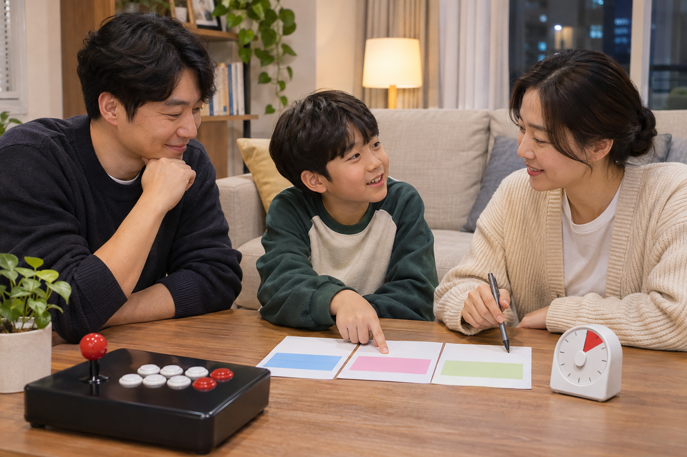
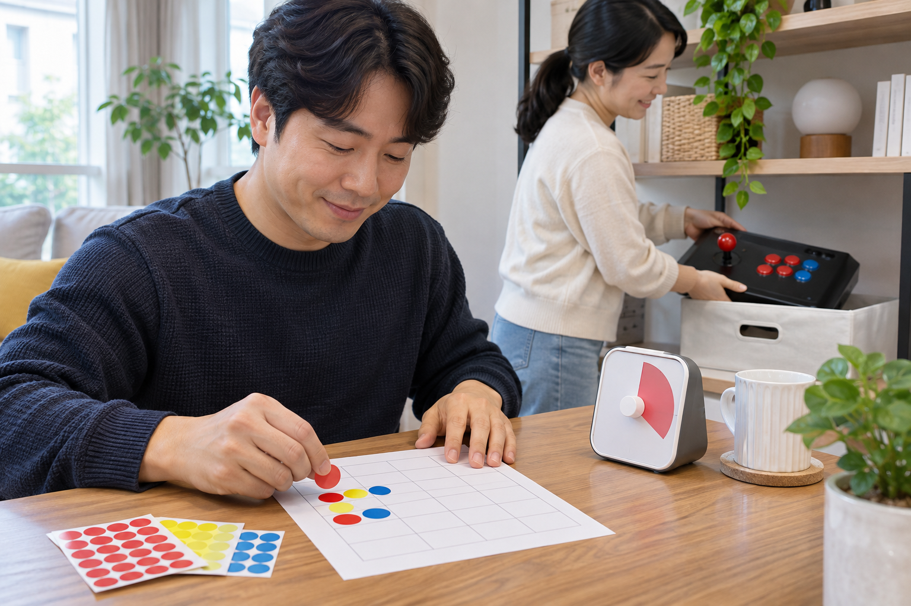

가족의 오락기 사용 시간은 주중과 주말의 기본 범위, 한 차례가 끝나는 기준, 번갈아 쓰는 순서를 함께 정하면 좋습니다. 한 사람에게 맞춘 고정 시간보다 가족 일정과 게임의 진행 단위를 고려해 시작 전에 합의하고, 사용 뒤에는 실제 차례를 간단히 기록하면 다음 약속을 조정하기 쉽습니다.

주중과 주말의 기본 시간을 나누세요
학교나 업무가 있는 날과 쉬는 날은 가족의 생활 흐름이 다르므로 주중과 주말의 기본 사용 시간을 따로 정하세요. 식사, 숙제, 취침이나 다른 가족의 휴식 시간과 겹치지 않는 범위를 먼저 찾고, 누구나 볼 수 있는 간단한 카드나 달력에 표시하면 말로만 정했을 때보다 확인하기 쉽습니다.
주중과 주말의 생활 흐름을 나누면 가족이 지킬 수 있는 기본 시간을 정하기 쉽습니다.
- 주중과 주말에 사용할 수 있는 시간대
- 한 사람이 한 번에 사용하는 차례
- 가족이 함께 하는 날과 각자 하는 날
- 일정이 바뀌었을 때 다시 정하는 시점
가족이 함께 사용할 제품을 고를 때 확인할 기준은 가정용 오락기를 가족과 함께 쓰는 방법에서도 살펴볼 수 있습니다.
한 차례의 종료 기준을 먼저 정하세요
분 단위의 시간만 정하기보다 한 판, 한 스테이지 또는 저장할 수 있는 지점처럼 멈출 기준을 함께 정하세요. 시간이 거의 끝났을 때 새 게임을 시작하지 않는 규칙을 더하면 갑자기 전원을 끄는 상황을 줄일 수 있습니다. 종료 뒤에는 화면과 조작부가 정상적으로 멈춘 것을 확인하고 제품 안내에 맞게 전원을 끄세요.
한 차례의 종료 기준은 시계와 게임 진행 상태를 함께 보고 정해야 분쟁을 줄일 수 있습니다.
안전하게 사용을 마치는 순서는 오락기를 안전하게 켜고 끄는 방법을 참고하세요.

차례와 사용 기록을 눈에 보이게 남기세요
여러 사람이 번갈아 사용한다면 이름 대신 색상 스티커나 표시 하나로 오늘 사용한 차례를 남겨 보세요. 기록은 감시가 아니라 다음 사람의 순서와 실제 사용 패턴을 확인하는 용도로 간단히 유지하는 편이 좋습니다. 약속한 시간과 실제 사용이 계속 다르면 누구의 잘못을 따지기보다 기본 시간이나 종료 기준을 다시 조정하세요.
간단한 차례 기록은 다음 순서를 분명히 하고 현실에 맞게 약속을 고치는 자료가 됩니다.
소리 때문에 다른 가족의 휴식과 충돌한다면 오락기 소리를 집에서 조절하는 방법도 함께 확인하세요.
기기 형태와 설치 공간까지 고려하세요
같은 사용 시간이라도 거실 TV를 함께 쓰는 방식과 독립된 본체를 쓰는 방식은 가족 일정에 미치는 영향이 다를 수 있습니다. TV 시청 시간, 조작부를 꺼내고 정리하는 시간, 기기 앞을 지나는 동선을 함께 살펴보고 시작과 정리 시간을 사용 규칙에 포함할지 정하세요.
사용 시간 규칙은 게임 시간뿐 아니라 화면 공유와 조작부 정리까지 포함해 정해야 합니다.
노리박스 공개 제품 목록에는 스탠드형, 좌식형, TV 연결형 오락기가 서로 다른 제품으로 안내되어 있습니다. 따라서 다른 가정의 시간표를 그대로 따르기보다 사용하려는 제품 형태와 설치 공간, 함께 쓰는 화면이 있는지를 기준으로 가족 규칙을 정하는 편이 좋습니다.
현재 판매 중인 제품 형태는 제품자세히보기에서 확인할 수 있습니다. 가족의 사용 방식과 설치 공간에 맞는 제품이 불분명하면 문의하기에서 함께 사용할 사람과 원하는 형태를 알려 주세요.